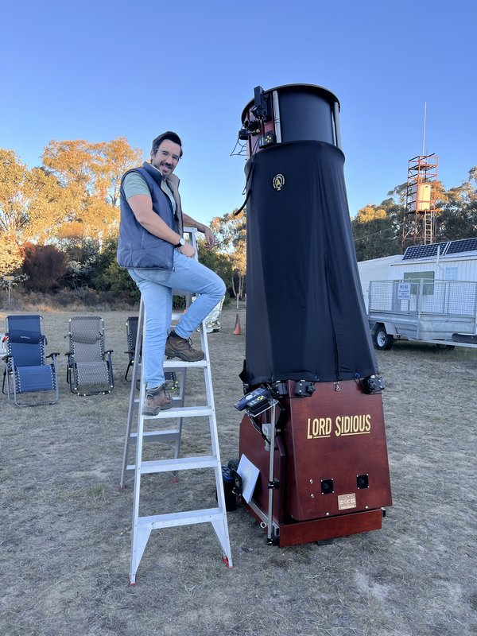

About

Alessandro Spina is a visual deep-sky observer and member of the Astronomical Society of NSW. His observing focuses on the southern deep sky — open clusters, globular clusters, planetary nebulae, emission nebulae, dark nebulae, and galaxies — observed through three Dobsonian reflectors of increasing aperture.
Wiruna
Wiruna is the Astronomical Society of NSW's dark-sky observing site, located near Ilford in rural central-western New South Wales. The site offers consistently dark skies and is home to a dedicated group of visual deep-sky observers who gather each new-moon weekend.
Equipment
- 12-inch f/5 Dobsonian
- 17.5-inch f/5 Dobsonian (Club Telescope)
- 22-inch f/5 Dobsonian (Club Telescope)
The Object Catalogue
Alongside the monthly articles, this site hosts a growing catalogue of deep-sky objects observed from Wiruna. Each entry includes background information, finder charts at multiple scales (wide-field, finderscope, eyepiece), a DSS survey plate, and personal observing notes. The catalogue is searchable by name, type, constellation, and magnitude.